🧱 MOD開発（ブロック）
ブロック追加の手順（Minecraft 1.20.1 / Forge）※まだ作成中
このページでは、Minecraft 1.20.1 の Forge 環境で、新しいブロックを追加する手順をまとめています。
簡易的なブロックを作ってみて、色々試してみてね！
① 新規パッケージフォルダを作成
src/main/java の中に、以下のようなディレクトリ(フォルダ)を2つ作成
例: D:\6_Dev\Mods\forge-1.20.1-47.4.13-mdk\src\main\java\com\myproject\project1_ayane_kao
この場合、存在してない myproject\project1_ayane_kao を作成する
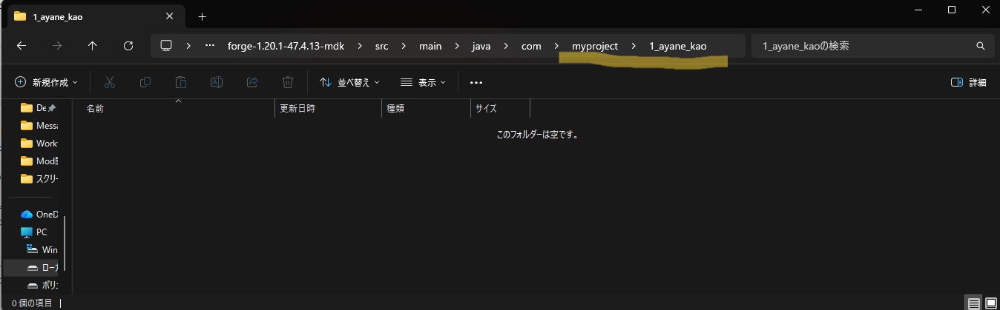
パッケージの命名規則は、 ”com.会社名.プロジェクト名” という構造が一般的。
② MODブロック用の Java メインクラス定義ファイルを作成
①で作ったディレクトリに、Project1AyaneKaoMod.javaを作成
IntelliJより、②で作成したディレクトリを右クリック > 新規 > Javaクラス
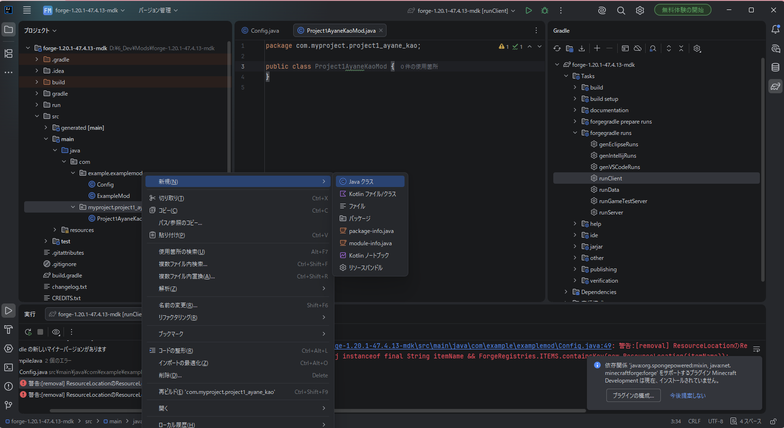
③ ブロック用の Java ファイル(メインクラス)を作成
IntelliJより、Project1AyaneKaoMod.javaに以下を記載する
package com.myproject.project1_ayane_kao;
import net.minecraftforge.fml.common.Mod;
import net.minecraftforge.eventbus.api.IEventBus;
import net.minecraftforge.fml.javafmlmod.FMLJavaModLoadingContext;
@Mod(Project1AyaneKaoMod.MODID)
public class Project1AyaneKaoMod {
public static final String MODID = "project1_ayane_kao";
public Project1AyaneKaoMod() {
IEventBus bus = FMLJavaModLoadingContext.get().getModEventBus();
ModBlocks.register(bus);
ModItems.register(bus);
}
}
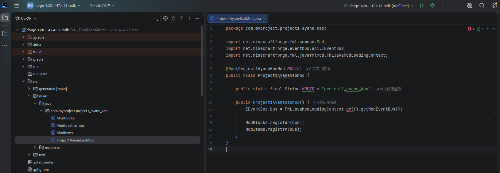
④ ブロック登録クラスを作成
同じ場所にModBlocks.java を作成し、DeferredRegister を使って登録します。
これで、ブロック自体をマイクラに読ませることが出来ます。
package com.myproject.project1_ayane_kao;
import net.minecraft.world.level.block.Block;
import net.minecraft.world.level.block.state.BlockBehaviour;
import net.minecraft.world.level.material.MapColor;
import net.minecraftforge.registries.DeferredRegister;
import net.minecraftforge.registries.ForgeRegistries;
import net.minecraftforge.registries.RegistryObject;
import net.minecraftforge.eventbus.api.IEventBus;
public class ModBlocks {
public static final DeferredRegister BLOCKS =
DeferredRegister.create(ForgeRegistries.BLOCKS, Project1AyaneKaoMod.MODID);
public static final RegistryObject AYANE_BLOCK =
BLOCKS.register("ayane_block", () ->
new Block(BlockBehaviour.Properties.of()
.mapColor(MapColor.COLOR_PINK)
.strength(2.0f, 5.0f)
));
public static void register(IEventBus eventBus) {
BLOCKS.register(eventBus);
}
}
⑤ ブロックアイテム登録クラスを作成
同じ場所にModItems.java を作成します。
これで、ブロックをインベントリに表示することができます。
package com.myproject.project1_ayane_kao;
import net.minecraft.world.item.BlockItem;
import net.minecraft.world.item.Item;
import net.minecraftforge.registries.DeferredRegister;
import net.minecraftforge.registries.ForgeRegistries;
import net.minecraftforge.registries.RegistryObject;
import net.minecraftforge.eventbus.api.IEventBus;
public class ModItems {
public static final DeferredRegister- ITEMS =
DeferredRegister.create(ForgeRegistries.ITEMS, Project1AyaneKaoMod.MODID);
public static final RegistryObject
- AYANE_BLOCK_ITEM =
ITEMS.register("ayane_block", () ->
new BlockItem(ModBlocks.AYANE_BLOCK.get(), new Item.Properties()));
public static void register(IEventBus eventBus) {
ITEMS.register(eventBus);
}
}
⑥ クリエイティブタブに追加
同じ場所にModCreativeTabs.java を作成します。
これで、ブロックをタブに入れることができます。
package com.myproject.project1_ayane_kao;
import net.minecraftforge.event.BuildCreativeModeTabContentsEvent;
import net.minecraftforge.eventbus.api.SubscribeEvent;
import net.minecraftforge.fml.common.Mod;
@Mod.EventBusSubscriber(modid = Project1AyaneKaoMod.MODID, bus = Mod.EventBusSubscriber.Bus.MOD)
public class ModCreativeTabs {
@SubscribeEvent
public static void addCreative(BuildCreativeModeTabContentsEvent event) {
if (event.getTabKey() == net.minecraft.world.item.CreativeModeTabs.BUILDING_BLOCKS) {
event.accept(ModItems.AYANE_BLOCK_ITEM);
}
}
}
⑦ JSON を追加する（モデル・ブロックステート）
src/main/resources に以下の フォルダとJSON を追加します。
【参考】リソースフォルダの目標構成
src/main/resources/assets/project1_ayane_kao/
├ blockstates/ayane_block.json
├ models/block/ayane_block.json
├ models/item/ayane_block.json
├ textures/block/ayane_block.png
フォルダやファイルを作成する場合、intellijからやるのがおすすめ 慣れたら、⑦-1はintellijで新規 > ディレクトリ で作ってみてね
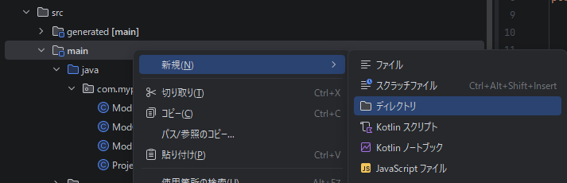
⑦-1 新規リソースフォルダを作成
src/main/resources の中に、以下のようなディレクトリ(フォルダ)を2つ作成
例: D:\6_Dev\Mods\forge-1.20.1-47.4.13-mdk\src\main\resources\assets\project1_ayane_kao
この場合、存在してない assets\project1_ayane_kao を作成する
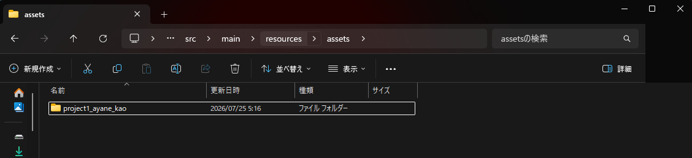
⑦-2 新規リソースサブフォルダを作成
src/main/resources/assets/project1_ayane_kao の中に、以下のようなディレクトリ(フォルダ)を4つ作成
blockstates
models/block
models/item
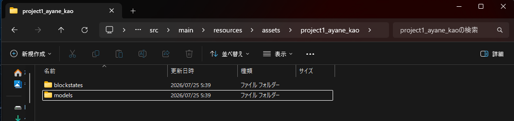
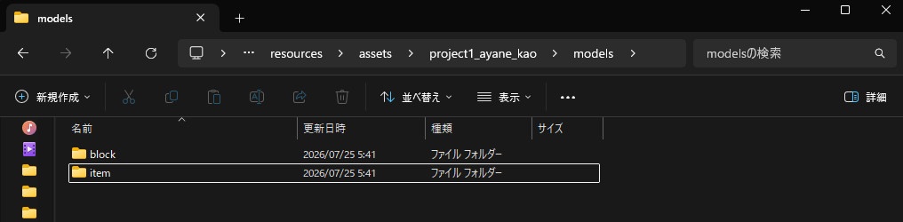
⑦-3 blockstates JSONを作成
📁 blockstates/ayane_block.json
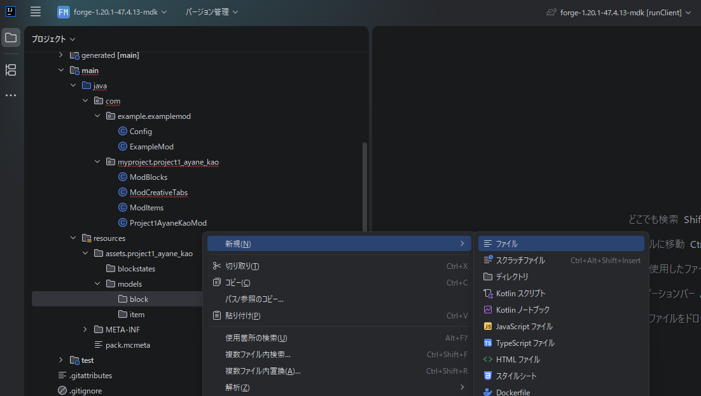
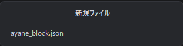
{
"variants": {
"": { "model": "project1_ayane_kao:block/ayane_block" }
}
}
⑦-4 models/block JSONを作成
📁 models/block/ayane_block.json
{
"parent": "minecraft:block/cube_all",
"textures": {
"all": "project1_ayane_kao:block/ayane_block"
}
}
⑦-5 models/item JSONを作成
📁 models/item/ayane_block.json
{
"parent": "project1_ayane_kao:block/ayane_block"
}
⑧ テクスチャを追加する
📁 textures/block/ayane_block.png を追加します。
マイクラに登録できるサイズは、16×16 or 32×32で、形式は.PNGです。
⑧-1 新規リソースサブフォルダを作成
src/main/resources/assets/project1_ayane_kao の中に、以下のようなディレクトリ(フォルダ)を2つ作成
textures/block
⑧-2 ayane_block.pngを配置する
src/main/resources/assets/project1_ayane_kao/textures/block の中に、ブロックの見た目にしたい画像を配置する
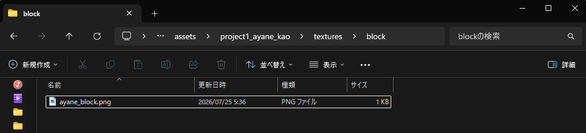
このサイトなどで、既存の写真などをドット絵に変換すると楽しいかも
無料ドット絵変換ツール⑨ gradle.propertiesの修正
forge-1.20.1-47.4.13-mdk/gradle.propertiesの内容を書き換える。
mod_id=project1_ayane_kao
mod_name=Project1 Ayane Kao Mod
mod_version=1.0.0（初回は変更しないでOK）
mod_group_id=com.myproject.project1_ayane_kao
mod_authors=rika（自分の名前へ）
mod_description=Ayane Kao's first Forge mod.\nThis is my custom block mod.
⑩ src\main\java\com\example の削除
元々配置してある、例（example）フォルダを削除または切り取って、forge-1.20.1-47.4.13-mdk配下からどける
※myprojectだけになればOK
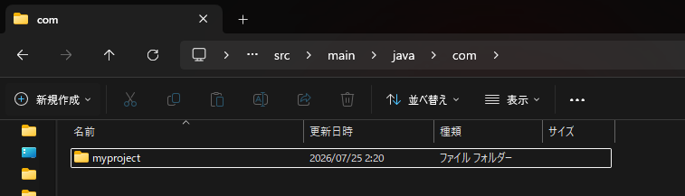
⑪ ReBuild
forge-1.20.1-47.4.13-mdkフォルダ直下からBuildフォルダを削除して、genIntellijRunsを実行
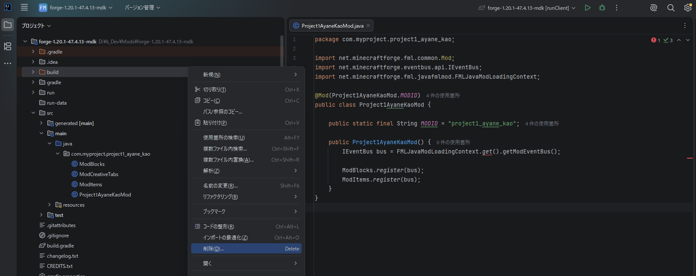
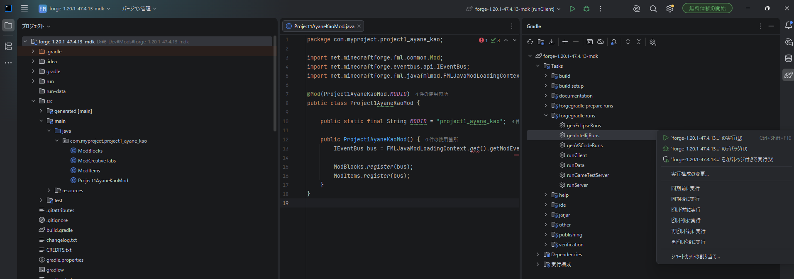
⑫ マイクラを起動して確認する
Gradle → forgegradle runs → runClient を実行し、ブロックが追加されているか確認します。
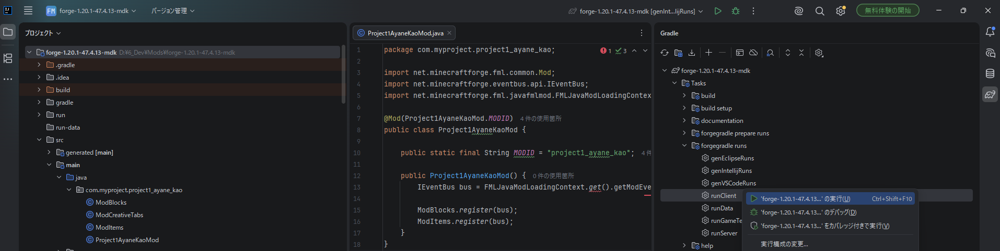
現在の設定では、クリエイティブでしか表示できない(レシピを登録してないから)ため、以下の設定で起動する
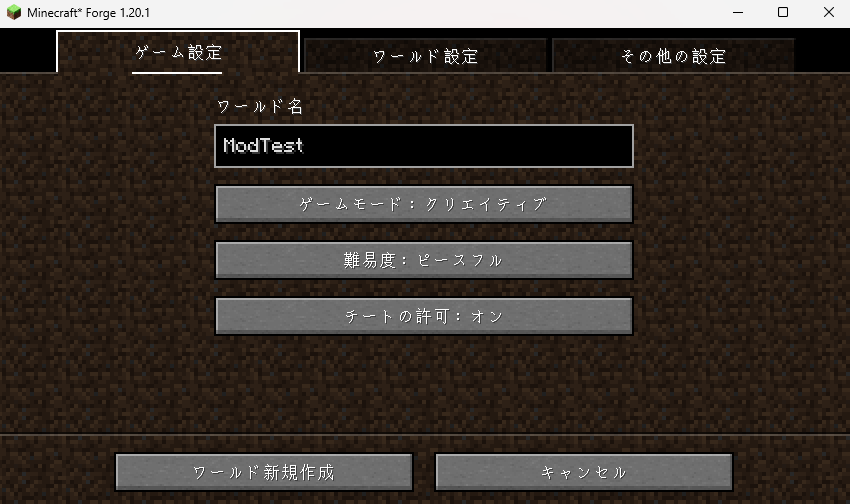
Itemにオリジナルブロックが追加されていることを確認
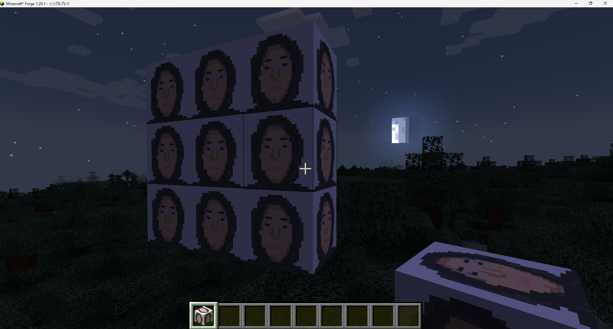
これでブロック追加は完了です！